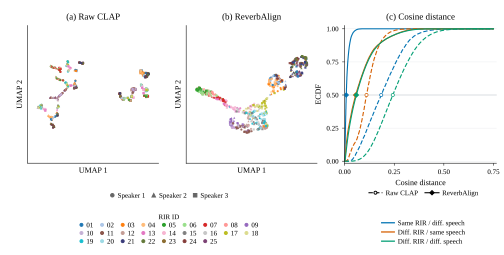

Paper companion · Audio examples
ReverbAlign
Text-Guided Reverberation Control with a Speech-Debiased CLAP Geometry
Compare the same speech and acoustic caption with Raw CLAP and ReverbAlign-512-v1. Reference tracks use measured RIRs and are provided for evaluation only.
Full test-set results & representation 750 matched pairs
25 held-out RIRs × 30 utterances, from three speakers. Both methods use the same caption, dry input, initialization, and 300 FDN updates. Hamilton’s approximately 16-second RIR is excluded.
| Attribute | MAE ↓ | Region agreement ↑ | ||
|---|---|---|---|---|
| Raw CLAP | ReverbAlign | Raw CLAP | ReverbAlign | |
MAE measures proximity to the reference RIR; region agreement tests the caption’s training-quantile interval. DRR remains a limitation: ReverbAlign’s mean signed error is +9.27 dB.

Audio examples 25
25 RIRs · 25 different utterances · 3 speakersFive cases per page. One track plays at a time. Each case shares one gain across all four tracks, preserving relative levels.
Sample selection & playback notes
Selection. Every one of the 25 test RIRs appears once, paired with a different test utterance. Speakers 174, 2086, and 2412 have 9, 8, and 8 cases. The previous speaker-to-RIR assignment is retained: room-median RT60 anchors receive speakers in rotation, and other RIRs balance the speaker counts. In room-ID and RIR-ID order, each case takes that speaker’s next unused utterance in lexicographic ID order, starting with the first. No model scores or listening preferences are used.
Scope. The demo contains 25 distinct RIRs and 25 distinct utterances selected from the 30 test utterances. Quantitative results above still use all 750 pairs. Captions use the fixed 96-combination template (4 RT60 × 4 C50 × 2 DRR × 3 EDT). The model is ReverbAlign-512-v1; Legacy-Best, free-form text, and four-level DRR experiments are excluded.
Audio. Offline renders of saved final 300-update FDN checkpoints, with no additional optimization or CLAP inference. RIRs are L2-normalized, convolved with the stored dry speech, and capped at 10 s. Reference tracks are the corresponding stored measured-RIR convolutions. A shared gain per case limits peak level to 0.95; there is no individual loudness normalization. Files are mono 16-kHz PCM16. The four RIR measurements are verified against the saved results. Reference audio and RIR measurements never enter the optimization objective.
Caption cut points are fitted to unique training RIRs. Boundary values enter the upper interval. DRR phrases denote relative training quantiles. RT60 uses T30/T20; C50 uses a 50-ms split; DRR uses a [−1, 2.5] ms direct window; EDT uses the initial 0 to −10 dB decay. Generated RIRs stop at the −60 dB trailing-energy threshold or 6 s.